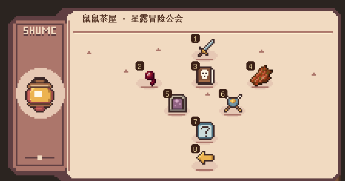
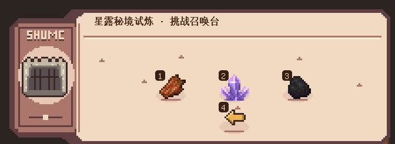
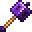
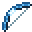
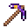
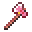
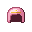
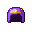
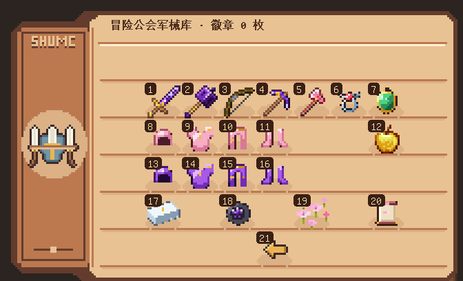
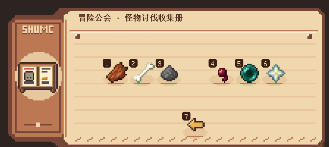

冒险公会
星露冒险公会：每日打怪悬赏、怪物讨伐册、召唤秘境试炼 Boss，攒星辉徽章换神兵护甲
冒险公会 /adventure
/adventure（别名 /冒险、/公会）。打怪会累计讨伐数、提升冒险家头衔，赚茶屋币和星辉徽章，徽章用来召唤更难的试炼和兑换神兵。
- 星辉精英：夜晚野外和矿洞里随机出现的精英怪，掉徽章和魔物核心（魔物核心可
/sell出货，65 币一个）。 - 打 Boss 前可以先去
/brew喝工坊饮品增强战力。


每日悬赏与讨伐册
每天 2 个打怪悬赏（例如「蜘蛛 / 洞穴蜘蛛 ×10」），第二天刷新，奖励 110 币 + 星辉徽章 ×2 + 附魔之瓶 ×4。
怪物讨伐册按 6 类怪物累计击杀，每类打够两档数量各领一次赏金：
| 讨伐类别 | 阶段 I | 阶段 II |
|---|---|---|
| 🧟 荒野僵尸（僵尸 / 尸壳 / 溺尸） | 40 只：120 币 + 徽章 ×2 | 120 只：300 币 + 徽章 ×5 |
| 🦴 枯骨弓手（骷髅 / 流浪者 / 沼骸） | 35 只：120 币 + 徽章 ×2 | 100 只：300 币 + 徽章 ×5 |
| 💥 爆破苦力怕 | 20 只：120 币 + 徽章 ×2 | 60 只：300 币 + 徽章 ×5 |
| 🕷 洞穴织网蛛 | 35 只：120 币 + 徽章 ×2 | 100 只：300 币 + 徽章 ×5 |
| 👁 末影行者 | 15 只：160 币 + 徽章 ×3 | 45 只：400 币 + 徽章 ×6 |
| 👹 秘境精英首领（星辉精英 / 试炼首领） | 3 只：220 币 + 徽章 ×3 | 10 只：600 币 + 徽章 ×8 |
秘境试炼
在野外空地（主城保护区内不行）召唤试炼首领，限时 8 分钟单挑。超时 Boss 会退散，消耗的徽章不退。伤害达到 15% 的队友可以拿一半奖励。每个季节有不同的词缀，菜单里会推荐克制的工坊饮品。
| 首领 | 难度 | 生命 | 召唤消耗 | 冷却 | 胜利奖励 |
|---|---|---|---|---|---|
| 🌿 古树苔藓卫士 | 初阶 · 适合铁套 | 120 | 免费 | 90 秒 | 110 币 + 20 福气值 + 徽章 ×2 + 魔核 ×1 |
| 💜 紫晶深渊蛛后 | 进阶 · 召唤幼蛛、减速晶刺 | 220 | 徽章 ×1 | 180 秒 | 230 币 + 40 福气值 + 徽章 ×4 + 魔核 ×2 |
| 👑 暗影凋灵骑士王 | 终极 · 暗影瞬步、震地冲击 | 360 | 徽章 ×2 | 300 秒 | 500 币 + 80 福气值 + 徽章 ×7 + 魔核 ×3 |


公会军械库
用星辉徽章 + 茶屋币兑换神兵和护甲，也能用徽章换锻造合金、晶洞和卷轴。

🌌 星辰银河刃
18 徽章 + 2200 币 · 锋利 V，右键星河斩击波

🔨 铱金重锤
15 徽章 + 1800 币 · 右键震荡冲击波

❄ 寒冰星露猎弓
15 徽章 + 1680 币 · 冰霜箭矢减速

⛏ 星露铱金镐
10 徽章 + 1200 币 · 效率 IV + 耐久 III

🪓 樱木灵斧
8 徽章 + 950 币 · 伐木兼近战
🩸 吸血蝙蝠戒指
10 徽章 + 1100 币 · 击杀回 1 颗心
🛡 磐石护佑符石
10 徽章 + 1100 币 · 常驻抗性 I，免疫中毒

🌸 樱花秘银轻甲（4 件）
每件 6 徽章 + 680 币 · 套装速度 I + 跳跃 I

🌌 星辉铱金重甲（4 件）
每件 12 徽章 + 1480 币 · 套装抗性 I + 生命恢复 I
徽章小件：秘境补给包（6 徽章：金苹果 ×2 + 附魔之瓶 ×12）、星露精铁锭 ×2（2 徽章）、紫晶晶洞（2 徽章）、鱼王诱饵包（1 徽章）、祈福卷轴礼袋（4 徽章）。



